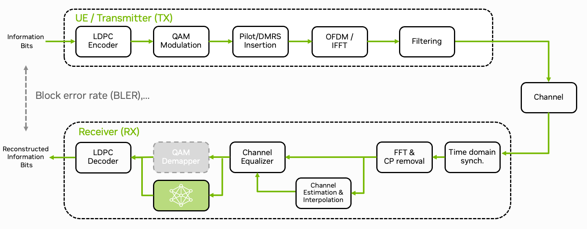

Part 2: GPU-Accelerated inference#
{kind=link}

We now discuss how to integrate the TensorRT engine for inference into the OAI stack. To keep the inference latency as low as possible [Gadiyar2023], [Kundu2023], we use CUDA graphs [Gray2019] to launch the TensorRT inference engine.
You will learn about:
How to accelerate the neural demapper using TensorRT
How to pre- and post-process input and output data using CUDA
How to use CUDA graphs for latency reductions
For details on efficient memory management when offloading compute-intensive functions to the GPU, we refer to the GPU-Accelerated LDPC Decoding tutorial.
Demapper Implementation Overview#
The neural demapper is implemented in PyTorch and exported to TensorRT, the source code of the inference logic can be found in plugins/neural_demapper/src/runtime/trt_demapper.cpp. The implementation will be explained in the following sections.
The TRT demapper receives noisy input symbols from the OpenAirInterface stack via the function trt_demapper_decode(), which chunks a given array of symbols into batches of maximum size MAX_BLOCK_LEN and then calls trt_demapper_decode_block() to carry out the actual inference on each batch. To leverage data-parallel execution on the GPU, inference is performed for batches of symbols and multiple threads in parallel. The output of the neural demapper is passed back in the form of num_bits_per_symbol LLRs per input symbol.
To run the TensorRT inference engine on the given int16_t-quantized data, we dequantize input symbols to half-precision floating-point format on the GPU using a data-parallel CUDA kernel (see norm_int16_symbols_to_float16()), and re-quantize output LLRs using another CUDA kernel (see float16_llrs_to_int16()).
Note
The full implementation can be found in plugins/neural_demapper/src/runtime/data_processing.cu and plugins/neural_demapper/src/runtime/trt_demapper.cpp.
Setting up the TensorRT Inference Engine#
To be compatible with the multi-threaded OpenAirInterface implementation, we load the neural demapper network into a TensorRT ICudaEngine once and share the inference engine between multiple IExecutionContext objects which are created per worker thread. We store the global and per-thread state, respectively, as follows:
1#include "NvInfer.h"
2#include <cuda_fp16.h>
3
4// global
5static IRuntime* runtime = nullptr;
6static ICudaEngine* engine = nullptr;
7
8// per thread
9struct TRTContext {
10 cudaStream_t default_stream = 0; // asynchronous CUDA command stream
11 IExecutionContext* trt = nullptr; // TensorRT execution context
12 void* prealloc_memory = nullptr; // memory block for temporary per-inference data
13 __half* input_buffer = nullptr; // device-side network inputs after CUDA pre-processing
14 __half* output_buffer = nullptr; // device-side network output before CUDA pre-processing
15
16 int16_t* symbol_buffer = nullptr; // write-through buffer for symbols written by CPU and read by GPU
17 int16_t* magnitude_buffer = nullptr; // write-through buffer for magnitude estimates written by CPU and read by GPU
18 int16_t* llr_buffer = nullptr; // host-cached buffer for llr estimates written by GPU and read by CPU
19
20 // list of thread contexts for shutdown
21 TRTContext* next_initialized_context = nullptr;
22};
23static __thread TRTContext thread_context = { };
We call the following global initialization routine on program startup:
1static char const* trt_weight_file = "models/neural_demapper.2xfloat16.plan"; // Training result / trtexec output
2static bool trt_normalized_inputs = true;
3
4extern "C" TRTContext* trt_demapper_init() {
5 if (runtime) // lazy, global
6 return &trt_demapper_init_context();
7
8 printf("Initializing TRT runtime\n");
9 runtime = createInferRuntime(logger);
10 printf("Loading TRT engine %s (normalized inputs: %d)\n", trt_weight_file, trt_normalized_inputs);
11 std::vector<char> modelData = readModelFromFile(trt_weight_file);
12 engine = runtime->deserializeCudaEngine(modelData.data(), modelData.size());
13
14 return &trt_demapper_init_context();
15}
16
17// Utilities
18
19std::vector<char> readModelFromFile(char const* filepath) {
20 std::vector<char> bytes;
21 FILE* f = fopen(filepath, "rb");
22 if (!f) {
23 logger.log(Logger::Severity::kERROR, filepath);
24 return bytes;
25 }
26 fseek(f, 0, SEEK_END);
27 bytes.resize((size_t) ftell(f));
28 fseek(f, 0, SEEK_SET);
29 if (bytes.size() != fread(bytes.data(), 1, bytes.size(), f))
30 logger.log(Logger::Severity::kWARNING, filepath);
31 fclose(f);
32 return bytes;
33}
34
35struct Logger : public ILogger
36{
37 void log(Severity severity, const char* msg) noexcept override
38 {
39 // suppress info-level messages
40 if (severity <= Severity::kWARNING)
41 printf("TRT %s: %s\n", severity == Severity::kWARNING ? "WARNING" : "ERROR", msg);
42 }
43};
44static Logger logger;
On startup of each worker thread, we initialize the per-thread contexts as follows:
1TRTContext& trt_demapper_init_context() {
2 auto& context = thread_context;
3 if (context.trt) // lazy
4 return context;
5
6 printf("Initializing TRT context (TID %d)\n", (int) gettid());
7
8 // create execution context with its own pre-allocated temporary memory attached
9 context.trt = engine->createExecutionContextWithoutDeviceMemory();
10 size_t preallocSize = engine->getDeviceMemorySize();
11 CHECK_CUDA(cudaMalloc(&context.prealloc_memory, preallocSize));
12 context.trt->setDeviceMemory(context.prealloc_memory);
13
14 // create own asynchronous CUDA command stream for this thread
15 CHECK_CUDA(cudaStreamCreateWithFlags(&context.default_stream, cudaStreamNonBlocking));
16
17 // allocate neural network input and output buffers (device access memory)
18 cudaMalloc((void**) &context.input_buffer, sizeof(*context.input_buffer) * 4 * MAX_BLOCK_LEN);
19 cudaMalloc((void**) &context.output_buffer, sizeof(*context.output_buffer) * MAX_BITS_PER_SYMBOL * MAX_BLOCK_LEN);
20
21 // OAI decoder input buffers that can be written and read with unified addressing from CPU and GPU, respectively
22 // note: GPU reads are uncached, but read-once coalesced
23 cudaHostAlloc((void**) &context.symbol_buffer, sizeof(*context.symbol_buffer) * 2 * MAX_BLOCK_LEN, cudaHostAllocMapped | cudaHostAllocWriteCombined);
24 cudaHostAlloc((void**) &context.magnitude_buffer, sizeof(*context.magnitude_buffer) * 2 * MAX_BLOCK_LEN, cudaHostAllocMapped | cudaHostAllocWriteCombined);
25 // OAI decoder output buffers that can be written and read with unified addressing from GPU and CPU, respectively
26 // note: GPU writes are uncached, but write-once coalesced
27 cudaHostAlloc((void**) &context.llr_buffer, sizeof(*context.llr_buffer) * MAX_BITS_PER_SYMBOL * MAX_BLOCK_LEN, cudaHostAllocMapped);
28
29 // keep track of active thread contexts for shutdown
30 TRTContext* self = &context;
31 __atomic_exchange(&initialized_thread_contexts, &self, &self->next_initialized_context, __ATOMIC_ACQ_REL);
32
33 return context;
34}
Running Batched Inference#
If decoder symbols are already available in half-precision floating-point format, running the TensorRT inference engine is as simple as performing one call to enqueue the corresponding inference commands on the asynchronous CUDA command stream of the calling thread’s context:
1void trt_demapper_run(TRTContext* context, cudaStream_t stream, __half const* inputs, size_t numInputs, size_t numInputComponents, __half* outputs) {
2 if (stream == 0)
3 stream = context->default_stream;
4
5 context.trt->setTensorAddress("y", (void*) inputs);
6 context.trt->setInputShape("y", Dims2(numInputs, numInputComponents));
7 context.trt->setTensorAddress("output_1", outputs);
8 context.trt->enqueueV3(stream);
9}
Converting Data Types between Host and Device#
In the OAI 5G stack, received symbols come in from the host side in quantized int16_t format, together with a channel magnitude estimate.
In order to convert inputs to half-precision floating-point format, we first copy the symbols to a pinned memory buffer mapped_symbols that resides in unified addressable memory, and then run a CUDA kernel for dequantization and normalization on the GPU.
After inference, the conversion back to quantized LLRs follows the same pattern, first a CUDA kernel quantizes the half-precision floating-point inference outputs, then the quantized data written by the GPU is read by the CPU using the unified addressable memory buffer mapped_outputs. Note that the CUDA command stream runs asynchronously, therefore it needs to be synchronized with the calling thread before accessing the output data.
1extern "C" void trt_demapper_decode_block(TRTContext* context_, cudaStream_t stream, int16_t const* in_symbols, int16_t const* in_mags, size_t num_symbols,
2 __half const *mapped_symbols, __half const *mapped_mags, size_t num_batch_symbols,
3 int16_t* outputs, uint32_t num_bits_per_symbol, __half* mapped_outputs) {
4 auto& context = *context_;
5
6 memcpy((void*) mapped_symbols, in_symbols, sizeof(*in_symbols) * 2 * num_symbols);
7 memcpy((void*) mapped_mags, in_mags, sizeof(*in_mags) * 2 * num_symbols);
8
9 size_t num_in_components;
10 if (trt_normalized_inputs) {
11 norm_int16_symbols_to_float16(stream, mapped_symbols, mapped_mags, num_batch_symbols,
12 (uint16_t*) context.input_buffer, 1);
13 num_in_components = 2;
14 }
15 else {
16 [...]
17 num_in_components = 4;
18 }
19
20 trt_demapper_run(&context, stream, recording ? nullptr : context.input_buffer, block_size, num_in_components, recording ? nullptr : context.output_buffer);
21
22 float16_llrs_to_int16(stream, (uint16_t const*) context.output_buffer, num_batch_symbols,
23 mapped_outputs, num_bits_per_symbol);
24
25 CHECK_CUDA(cudaStreamSynchronize(stream));
26 memcpy(outputs, mapped_outputs, sizeof(*outputs) * num_bits_per_symbol * num_symbols);
27}
The CUDA kernel for normalization runs in a straight-forward 1D CUDA grid, reading the tuples of int16_t-quantized components that make up each complex value in a coalesced (consecutive) way, as one int32_t value each. Then, the symbol values are normalized with respect to the magnitude values and again written in a coalesced way, fusing each complex symbol into one __half2 value:
1__global__ void
2norm_int16_symbols_to_float16_kernel(
3 const int16_t* __restrict__ symbols_i,
4 const int16_t* __restrict__ magnitudes_i,
5 uint32_t num_symbols,
6 __half2* __restrict symbols_h,
7 uint32_t output_int32_stride
8 ) {
9 uint32_t globalIdx = threadIdx.x + blockDim.x * blockIdx.x;
10 if (globalIdx >= num_symbols)
11 return;
12
13 uint32_t symbolBits = reinterpret_cast<const uint32_t*>(symbols_i)[globalIdx];
14 int16_t s_r = int16_t(uint16_t(symbolBits & 0xffff)); // note: little endian
15 int16_t s_i = int16_t(uint16_t(symbolBits >> 16)); // ...
16
17 uint32_t magBits = reinterpret_cast<const uint32_t*>(magnitudes_i)[globalIdx];
18 int16_t m_r = int16_t(uint16_t(magBits & 0xffff)); // note: little endian
19 int16_t m_i = int16_t(uint16_t(magBits >> 16)); // ...
20
21 float2 sf;
22 sf.x = float(s_r) / float(m_r);
23 sf.y = float(s_i) / float(m_i);
24 symbols_h[globalIdx * output_int32_stride] = __float22half2_rn(sf);
25}
26
27void norm_int16_symbols_to_float16(
28 cudaStream_t stream,
29 const int16_t* symbols_i,
30 const int16_t* magnitudes_i,
31 uint32_t num_symbols,
32 uint16_t* symbols_h,
33 uint32_t output_int32_stride
34 ) {
35 dim3 threads(256);
36 dim3 blocks(blocks_for(num_symbols, threads.x));
37
38 norm_int16_symbols_to_float16_kernel<<<blocks, threads, 0, stream>>>(
39 symbols_i,
40 magnitudes_i,
41 num_symbols,
42 reinterpret_cast<__half2*>(symbols_h),
43 output_int32_stride
44 );
45}
1inline __host__ __device__ int blocks_for(uint32_t elements, int block_size) {
2 return int( uint32_t(elements + (block_size-1)) / uint32_t(block_size) );
3}
The CUDA kernel for re-quantization of output LLRs works analogously, converting half-precision floating-point LLR tuples to quantized int16_t values by fixed-point scaling and rounding:
1__global__ void
2float16_llrs_to_int16_kernel(
3 __half const* __restrict llrs_h,
4 uint32_t num_llrs,
5 int16_t* __restrict__ llrs_i
6 ) {
7 uint32_t globalIdx = threadIdx.x + blockDim.x * blockIdx.x;
8
9 float2 tuple = {};
10 if (2 * globalIdx + 1 < num_llrs)
11 tuple = __half22float2( reinterpret_cast<const __half2*>(llrs_h)[globalIdx] );
12 else if (2 * globalIdx < num_llrs)
13 tuple.x = llrs_h[2 * globalIdx];
14 else
15 return;
16
17 int16_t s1 = int16_t(__float2int_rn(ldexpf(tuple.x, 8)));
18 int16_t s2 = int16_t(__float2int_rn(ldexpf(tuple.y, 8)));
19
20 if (2 * globalIdx + 1 < num_llrs)
21 reinterpret_cast<uint32_t*>(llrs_i)[globalIdx] = (uint32_t(s2 & 0xffffu) << 16) + uint32_t(s1 & 0xffffu); // note: little endian
22 else
23 llrs_i[2 * globalIdx] = s1;
24}
25
26void float16_llrs_to_int16(
27 cudaStream_t stream,
28 uint16_t const* llrs_h,
29 uint32_t num_symbols,
30 int16_t* llrs_i,
31 uint32_t num_bits
32 ) {
33
34 dim3 threads(256);
35 dim3 blocks(blocks_for(blocks_for(num_symbols * num_bits, 2u), threads.x));
36
37 float16_llrs_to_int16_kernel<<<blocks, threads, 0, stream>>>(
38 reinterpret_cast<__half const*>(llrs_h),
39 num_symbols * num_bits,
40 llrs_i
41 );
42}
Demapper Integration in OAI#
Note
Ensure that you have built the TRT engine in the first part of the tutorial.
In order to mount the TensorRT models and config files, you need to extend the config/common/docker-compose.override.yaml file:
1services:
2 oai-gnb:
3 volumes:
4 - ../../plugins/neural_demapper/models/:/opt/oai-gnb/models
5 - ../../plugins/neural_demapper/config/demapper_trt.config:/opt/oai-gnb/demapper_trt.config
Pre-trained models are available in plugins/neural_demapper/models.
The TRT config file format has the following schema:
<trt_engine_file:string> # file name of the TensorRT engine
<trt_normalized_inputs:int> # flag to indicate if the inputs are normalized
For example, the following config file will use the TensorRT engine models/neural_demapper.2xfloat16.plan and normalize the inputs:
model/neural_demapper.2xfloat16.plan
1
Running the Demapper#
The neural demapper is implemented as a shared library (see Plugins & Data Acquisition) which can be loaded using the OAI shared library loader. The demapper can now be used as a drop-in replacement for the QAM-16 default implementation. The demapper can be loaded when running the gNB via the following GNB_EXTRA_OPTIONS in the config/<config_name>/.env file of the config folder.
GNB_EXTRA_OPTIONS=--loader.demapper.shlibversion _trt --MACRLCs.[0].dl_max_mcs 10 --MACRLCs.[0].ul_max_mcs 10
We limit the MCS indices to 10 in order to stay within the QAM-16 modulation order.
Congratulations! You have now successfully implemented demapping using a neural network.
You can track the GPU load via
# on DGX Spark
$ nvidia-smi
# on Jetson
$ jtop
Implementation Aspects#
In the following section, we focus on various technical aspects of the CUDA implementation and the performance implications of different memory transfer patterns and command scheduling optimization.
Memory Management#
Similar to the GPU-Accelerated LDPC Decoding tutorial, we use the shared system memory architecture to avoid the bottleneck of costly memory transfers on traditional split-memory platforms.
As previously covered in the GPU-Accelerated LDPC Decoding tutorial, optimizing memory operations is essential for real-time performance. For the neural demapper implementation, we use the same efficient approach of page-locked memory (via cudaHostAlloc()) to enable direct GPU-CPU memory sharing. This allows for simple memcpy() operations instead of complex memory management calls, with host caching enabled for CPU access while device caching is disabled for direct memory access. This approach is particularly well-suited for the small buffer sizes used in neural demapping, avoiding the overhead of traditional GPU memory management methods like cudaMemcpyAsync() or cudaMallocManaged().
For comparison, we show both variants side-by-side in the following inference code, where the latency-optimized code path is the one with USE_UNIFIED_MEMORY defined:
1extern "C" void trt_demapper_decode_block(TRTContext* context_, cudaStream_t stream, int16_t const* in_symbols, int16_t const* in_mags, size_t num_symbols,
2 __half const *mapped_symbols, __half const *mapped_mags, size_t num_batch_symbols,
3 int16_t* outputs, uint32_t num_bits_per_symbol, __half* mapped_outputs) {
4 auto& context = *context_;
5
6#if defined(USE_UNIFIED_MEMORY)
7 memcpy((void*) mapped_symbols, in_symbols, sizeof(*in_symbols) * 2 * num_symbols);
8 memcpy((void*) mapped_mags, in_mags, sizeof(*in_mags) * 2 * num_symbols);
9#else
10 cudaMemcpyAsync((void*) mapped_symbols, in_symbols, sizeof(*in_symbols) * 2 * num_symbols, cudaMemcpyHostToDevice, stream);
11 cudaMemcpyAsync((void*) mapped_mags, in_mags, sizeof(*in_mags) * 2 * num_symbols, cudaMemcpyHostToDevice, stream);
12#endif
13
14 size_t num_in_components;
15 if (trt_normalized_inputs) {
16 norm_int16_symbols_to_float16(stream, mapped_symbols, mapped_mags, num_batch_symbols,
17 (uint16_t*) context.input_buffer, 1);
18 num_in_components = 2;
19 }
20 else {
21 [...]
22 num_in_components = 4;
23 }
24
25 trt_demapper_run(&context, stream, recording ? nullptr : context.input_buffer, block_size, num_in_components, recording ? nullptr : context.output_buffer);
26
27 float16_llrs_to_int16(stream, (uint16_t const*) context.output_buffer, num_batch_symbols,
28 mapped_outputs, num_bits_per_symbol);
29
30#if defined(USE_UNIFIED_MEMORY)
31 // note: synchronize the asynchronous command queue before accessing from the host
32 CHECK_CUDA(cudaStreamSynchronize(stream));
33 memcpy(outputs, mapped_outputs, sizeof(*outputs) * num_bits_per_symbol * num_symbols);
34#else
35 cudaMemcpyAsync(outputs, mapped_outputs, sizeof(*outputs) * num_bits_per_symbol * num_symbols, cudaMemcpyDeviceToHost, stream);
36 // note: synchronize after the asynchronous command queue has executed the copy to host
37 CHECK_CUDA(cudaStreamSynchronize(stream));
38#endif
39}
CUDA Graph Optimization#
CUDA command graph APIs [Gray2019] were introduced to frontload the overhead of scheduling repetitive sequences of compute kernels on the GPU, allowing pre-recorded, pre-optimized command sequences, such as in our case neural network inference, to be scheduled by a single API call. Thus, latency can be reduced further, focussing runtime spending on the actual computations rather than on dynamic command scheduling. We pre-record CUDA graphs including demapper inference, data pre-processing, and post-processing, for two different batch sizes, one for common small batches and one for the maximum expected parallel batch size.
Command graphs are pre-recorded per thread due to the individual intermediate storage buffers used. We run the recording at the end of thread context initialization as introduced above, for each batch size running one size-0 inference to trigger any kind of lazy runtime allocations, and another inference on dummy inputs for the actual recording:
1#ifdef USE_GRAPHS
2 // record graphs for optimal and max block size
3 for (int i = 0; i < 2; ++i) {
4 int16_t in_symbols[2], in_mags[2], outputs[MAX_BITS_PER_SYMBOL];
5 unsigned num_batch_symbols = i == 0 ? MAX_BLOCK_LEN : OPT_BLOCK_LEN;
6 unsigned num_bits_per_symbol = 4;
7
8 // pre-allocate, then record
9 for (int a = 0; a < 2; ++a) {
10 trt_demapper_decode_block(&context, context.default_stream, in_symbols, in_mags, a,
11 context.symbol_buffer, context.magnitude_buffer, num_batch_symbols,
12 outputs, num_bits_per_symbol, context.llr_buffer);
13 }
14 }
15#endif
To extend the function trt_demapper_decode_block() with CUDA graph recording and execution, we introduce the following code paths when USE_GRAPHS is defined:
1extern "C" void trt_demapper_decode_block(TRTContext* context_, cudaStream_t stream, int16_t const* in_symbols, int16_t const* in_mags, size_t num_symbols,
2 int16_t const *mapped_symbols, int16_t const *mapped_mags, size_t num_batch_symbols,
3 int16_t* outputs, uint32_t num_bits_per_symbol, int16_t* mapped_outputs) {
4 auto& context = *context_;
5
6 uint32_t block_size = num_batch_symbols > OPT_BLOCK_LEN ? MAX_BLOCK_LEN : OPT_BLOCK_LEN;
7 cudaGraph_t& graph = block_size == OPT_BLOCK_LEN ? context.graph_opt : context.graph_max;
8 cudaGraphExec_t& graphCtx = block_size == OPT_BLOCK_LEN ? context.record_opt : context.record_max;
9
10 if (num_symbols > 0) {
11 memcpy((void*) mapped_symbols, in_symbols, sizeof(*in_symbols) * 2 * num_symbols);
12 memcpy((void*) mapped_mags, in_mags, sizeof(*in_mags) * 2 * num_symbols);
13 }
14
15 // graph capture
16 if (!graph) {
17 bool recording = false;
18#ifdef USE_GRAPHS
19 // allow pre-allocation before recording
20 if (num_symbols > 0) {
21 // in pre-recording phase
22 CHECK_CUDA(cudaStreamBeginCapture(stream, cudaStreamCaptureModeRelaxed));
23 num_batch_symbols = block_size;
24 recording = true;
25 }
26 // else: pre-allocation phase
27#endif
28
29 size_t num_in_components;
30 if (trt_normalized_inputs) {
31 norm_int16_symbols_to_float16(stream, mapped_symbols, mapped_mags, num_batch_symbols,
32 (uint16_t*) context.input_buffer, 1);
33 num_in_components = 2;
34 }
35 else {
36 int16_symbols_to_float16(stream, mapped_symbols, num_batch_symbols,
37 (uint16_t*) context.input_buffer, 2);
38 int16_symbols_to_float16(stream, mapped_mags, num_batch_symbols,
39 (uint16_t*) context.input_buffer + 2, 2);
40 num_in_components = 4;
41 }
42
43 trt_demapper_run(&context, stream, recording ? nullptr : context.input_buffer, block_size, num_in_components, recording ? nullptr : context.output_buffer);
44
45 float16_llrs_to_int16(stream, (uint16_t const*) context.output_buffer, num_batch_symbols,
46 mapped_outputs, num_bits_per_symbol);
47
48#ifdef USE_GRAPHS
49 if (num_symbols > 0) {
50 // in pre-recording phase
51 CHECK_CUDA(cudaStreamEndCapture(stream, &graph));
52 printf("Recorded CUDA graph (TID %d), stream %llX\n", (int) gettid(), (unsigned long long) stream);
53 }
54#endif
55 }
56
57#ifdef USE_GRAPHS
58 if (graph && !graphCtx) {
59 // in pre-recording phase
60 CHECK_CUDA(cudaGraphInstantiate(&graphCtx, graph, 0));
61 }
62 else if (num_symbols > 0) {
63 // in runtime inference, run pre-recorded graph
64 cudaGraphLaunch(graphCtx, stream);
65 }
66#endif
67
68 CHECK_CUDA(cudaStreamSynchronize(stream));
69 memcpy(outputs, mapped_outputs, sizeof(*outputs) * num_bits_per_symbol * num_symbols);
70}
Note
Note that CUDA graphs are currently only enabled on DGX Spark. Jetson platform support is disabled pending investigation of stability issues.
Unit tests#
We have implemented unit tests using pytest to allow testing individual parts of the implementation outside of the full 5G stack. The unit tests can be found in plugins/neural_demapper/tests/. The unit tests use nanobind to call the TensorRT and CUDA modules from Python and to test against Python-based reference implementations. For more details on how to use nanobind, please refer to the nanobind documentation.
Outlook#
This was a first tutorial on accelerating neural network inference using TensorRT and CUDA graphs. The neural demapper itself is a simple network and the focus was on the integration rather than the actual error rate performance.
You are now able to deploy your own neural networks using this tutorial as a blueprint. An interesting starting point could be the 5G NR PUSCH Neural Receiver tutorial, which provides a 5G compliant implementation of a neural receiver and already provides a TensorRT export of the trained network.